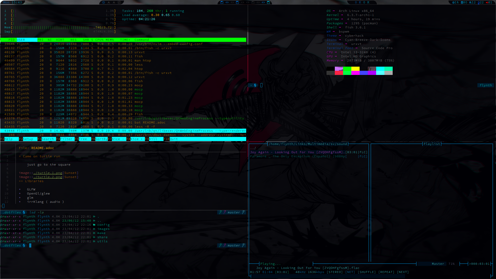
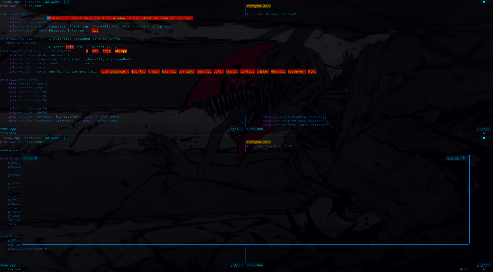
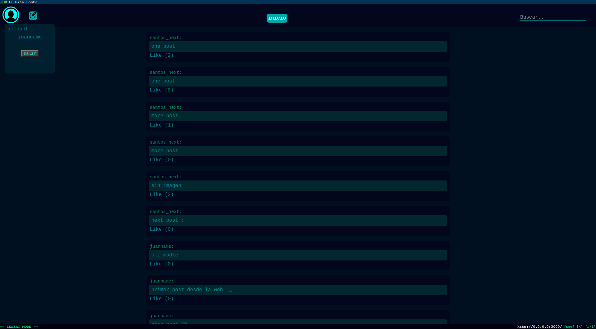
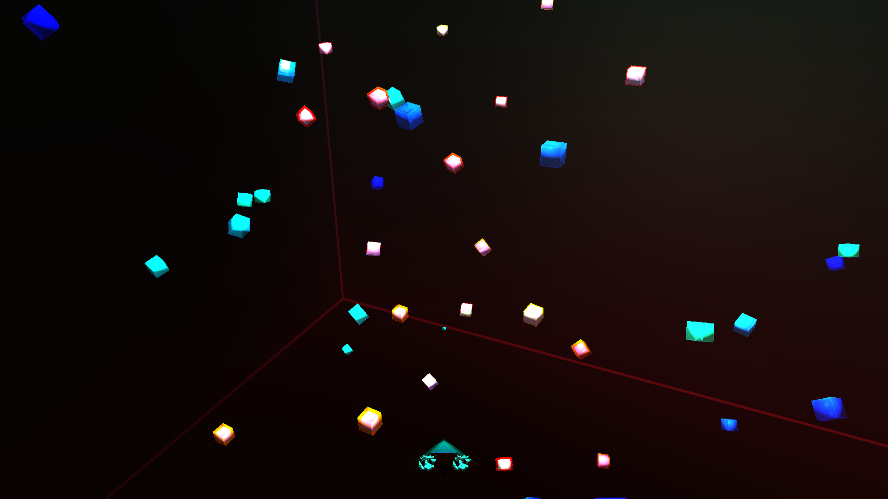

About Me
I'm from La Paz Bolivia I'm 19 years old, I've 4 years of experience programming
I learn fast ,I love learning and giving the highest quality to my code, using software architecture, design patterns, agile methodologies with the best practices
Experience
use of agile methodologies such as SCRUM, application of design patterns, software architecture for the development of scalable programs
Linux development environment
I've experience in GNU/Linux is my development system,
create an environment specifically for programming based on Arch Linux.
create multiple shell scripts to improve development speed
github

Code editor
modify the neovim code editor
adding functionality through vimScript, lua, shellScript,
for convenience and efficiency when developing.
github

Web site
create backend projects from the responder to the database environment
using software architecture and the latest and fastest technologies ,inside containers for use in any environment
github

Opengl/Games (multi-plataform)
develop structures and functionality for video game machines,like vehicles and tanks, giving a realistic representation of how it works in the real world
